8 Polar plots
This Section considers the flexible polarPlot function that is used to provide information about source characteristics. The clustering of polar plots is also considered using polarCluster.
8.1 Introduction to polar plots
The polarPlot function plots a bivariate polar plot of concentrations. Concentrations are shown to vary by wind speed and wind direction. In many respects they are similar to the plots shown in Chapter 6 but include some additional enhancements. These enhancements include: plots are shown as a continuous surface and surfaces are calculated through modelling using smoothing techniques. These plots are not entirely new as others have considered the joint wind speed-direction dependence of concentrations (see for example Yu et al. (2004)). However, plotting the data in polar coordinates and for the purposes of source identification is new. Furthermore, the basic polar plot is since been enhanced in many ways as described below. Publications that describe or use the technique are Carslaw et al. (2006) and Westmoreland et al. (2007). These plots have proved to be useful for quickly gaining a graphical impression of potential sources influences at a location.
The polarPlot function is described in more detail in Carslaw et al. (2006) where it is used to triangulate sources in an airport setting, Carslaw and Beevers (2013) where it is used with a clustering technique to identify features in a polar plot with similar characteristics and Uria-Tellaetxe and Carslaw (2014) where it is extended to include a conditional probability function to extract more information from the plots.
For many, maybe most situations, increasing wind speed generally results in lower concentrations due to increased dilution through advection and increased mechanical turbulence. There are, however, many processes that can lead to interesting concentration-wind speed dependencies, and we will provide a more theoretical treatment of this in due course. However, below are a few reasons why concentrations can change with increasing wind speeds.
Buoyant plumes from tall stacks can be brought down to ground-level resulting in high concentrations under high wind speed conditions.
Particle suspension increases with increasing wind speeds e.g. PM10 from spoil heaps and the like.
‘Particle’ suspension can be important close to coastal areas where higher wind speeds generate more sea spray.
The wind speed dependence of concentrations in a street canyon can be very complex: higher wind speeds do not always results in lower concentrations due to re-circulation. Bivariate polar plots are very good at revealing these complexities.
As Carslaw et al. (2006) showed, aircraft emissions have an unusual wind speed dependence and this can help distinguish them from other sources. If several measurement sites are available, polar plots can be used to triangulate different sources.
Concentrations of NO2 can increase with increasing wind speed — or at least not decline steeply due to increased mixing. This mixing can result in O3-rich air converting NO to NO2.
The function has been developed to allow variables other than wind speed to be plotted with wind direction in polar coordinates. The key issue is that the other variable plotted against wind direction should be discriminating in some way. For example, temperature can help reveal high-level sources brought down to ground level in unstable atmospheric conditions, or show the effect a source emission dependent on temperature e.g. biogenic isoprene. For research applications where many more variables could be available, discriminating sources by these other variables could be very insightful.
Bivariate polar plots are constructed in the following way. First, wind speed, wind direction and concentration data are partitioned into wind speed-direction bins and the mean concentration calculated for each bin. Testing on a wide range of data suggests that wind direction intervals at 5–10\(^\circ\) and 40 wind speed intervals capture sufficient detail of the concentration distribution. The wind direction data typically available are generally rounded to 10\(^\circ\) and for typical surface measurements. Binning the data in this way is not strictly necessary but acts as an effective data reduction technique without affecting the fidelity of the plot itself. Furthermore, because of the inherent wind direction variability in the atmosphere, data from several weeks, months or years typically used to construct a bivariate polar plot tends to be diffuse and does not vary abruptly with either wind direction or speed and more finely resolved bin sizes or working with the raw data directly does not yield more information.
The wind components, \(u\) and \(v\) are calculated i.e.
\[ u = \overline{u} . sin\left(\frac{2\pi}{\theta}\right), v = \overline{u} . cos\left(\frac{2\pi}{\theta}\right) \tag{8.1}\]
with \(\overline{u}\) is the mean hourly wind speed and \(\theta\) is the mean wind direction in degrees with 90\(^\circ\) as being from the east.
The calculations above provides a \(u\), \(v\), concentration (\(C\)) surface. While it would be possible to work with this surface data directly a better approach is to apply a model to the surface to describe the concentration as a function of the wind components \(u\) and \(v\) to extract real source features rather than noise. A flexible framework for fitting a surface is to use a Generalized Additive Model (GAM) e.g. (Hastie and Tibshirani 1990), (Wood 2006). GAMs are a useful modelling framework with respect to air pollution prediction because typically the relationships between variables are non-linear and variable interactions are important, both of which issues can be addressed in a GAM framework. GAMs can be expressed as shown in Equation 8.2:
\[ \sqrt{C_i} = \beta_0 + \sum_{j=1}^{n}s_j(x_{ij}) + e_i \tag{8.2}\]
where \(C_i\) is the ith pollutant concentration, \(\beta_0\) is the overall mean of the response, \(s_j(x_{ij})\) is the smooth function of ith value of covariate \(j\), \(n\) is the total number of covariates, and \(e_i\) is the \(i\)th residual. Note that \(C_i\) is square-root transformed as the transformation generally produces better model diagnostics e.g. normally distributed residuals.
The model chosen for the estimate of the concentration surface is given by Equation 8.3. In this model the square root-transformed concentration is a smooth function of the bivariate wind components \(u\) and \(v\). Note that the smooth function used is isotropic because \(u\) and \(v\) are on the same scales. The isotropic smooth avoids the potential difficulty of smoothing two variables on different scales e.g. wind speed and direction, which introduces further complexities.
\[ \sqrt{C_i} = s(u, v) + e_i \tag{8.3}\]
8.2 Polar plots from an air pollution dispersion perspective
This section considers some of the common features that can be observed in polar plots that can be related to the underlying characteristics of dispersion. Hourly dispersion model output can be analysed in the same way as measurements of air pollution but has the advantage of simplifying the types and number of sources considered.
8.2.1 Effect of source type
As an example of different dispersion behaviours two source types have been modelled using the ADMS 5.2 model: a small shallow volume source and a single stack. The volume source is assumed to be 10 m deep and cover an area of 50x50 m with the receptor located at (0, 0) and the source centred at (-500, -500). This type of source is a simple representation of urban area sources e.g. road traffic and domestic combustion. The point source is assumed to have a height of 60 m, and efflux velocity of 10 m s-1 and a temperature of 150 °C. The receptor is located about 1 km to the north-west of the source (i.e. the source is to the south-west of the receptor). Hourly meteorological data from the London Heathrow site for 2019 were used in the model.
The hourly output from the model was processed and polar plots produced for each source type as shown in Figure 8.1. The shallow volume source (Figure 8.1 (a)) shows a characteristic dispersion pattern where concentrations are highest at low wind speeds (shown by the high values at the centre of the plot), which decrease with increasing wind speed (away from the centre of the plot). This type of pattern is frequently seen in monitoring data and often in urban areas where there are lots of ground-level, non-buoyant sources.
By contrast, the pattern from the stack shown in Figure 8.1 (b) is markedly different compared to the shallow volume source. In this case, it is clear the source is located to the south-west and is detected at a range of wind speeds, even up to very high values. This sort of behaviour is typical of a stack source plume being brought down to ground level under higher wind speed conditions. The pattern seen in Figure 8.1 (b) will depend on many factors such as distance to the stack, the nature of the release (efflux velocity and plume exit temperature) and the effect of the atmosphere itself, which is discussed more in the next section.

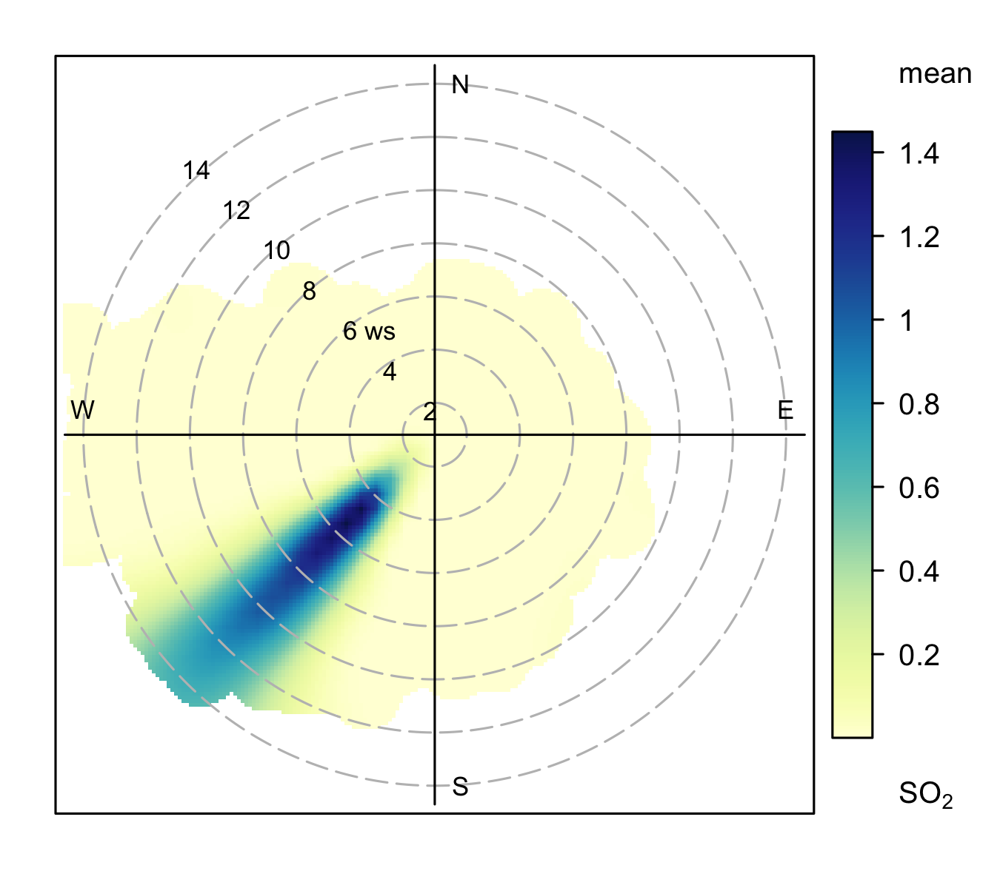
8.2.2 Atmospheric stability on the radial axis
By default, polar plots use wind speed on the radial axis. However, any numeric variable can be used if it is helpful in distinguishing between different types of source. For example, if a source is known to have an ambient temperature dependence (such as biogenic isoprene emissions), then temperature on the radial axis can usefully highlight these types of source. Similarly, relative humidity might be useful in highlighting re-suspended sources where particles are bound by water and remain on the surface at higher relative humidities.
From a dispersion perspective, atmospheric stability is of fundamental importance to how plumes disperse. Originally, categorical stability classes such as the Pasquill-Gifford were widely used in dispersion modelling, with classes from A to G (A = extremely unstable, D = neutral and G = extremely stable. However, ‘modern’ dispersion models such as the Atmospheric Dispersion Modelling System (ADMS) and the USEPA AERMOD models use the Monin-Obukhov length (LMO) and boundary layer height (H) as the basis of describing the boundary layer and its stability. In particular, the ratio of H/LMO represents a continuous scale of atmospheric stability. Ranges of H/LMO can provide a guide as to whether the atmosphere is unstable, neutral or stable, as shown in Table 8.1. The choice of values to partition H/LMO is somewhat arbitrary but the values given in Table 8.1 are commonly used values.
| Condition | Range |
|---|---|
| Convective (unstable) | H/LMO < -0.6 |
| Neutral | -0.6 < H/LMO < 2 |
| Stable | H/LMO > 2 |
A continuous measure of atmospheric stability available through H/LMO makes it possible to use atmospheric stability on the radial axis. It should be noted that both ADMS and AERMOD use meteorological pre-processors to calculate these parameters, allowing them to be used in any analysis of dispersion model output or ambient measurements.1
The influence of atmospheric stability on plume dispersion can be seen in Figure 8.2, which shows the average plume height and spread (σz) across all conditions modelled. This Figure highlights several important characteristics: that an elevated plume under stable conditions may not reach ground level in proximity to the stack, that plume spread is much less under stable conditions and when the atmosphere is unstable (convective) there is a greater chance of a plume being brought down to ground level close to the source. As discussed in the previous section, the actual variation in these characteristics will depend on many factors, but they do highlight some common behaviours.
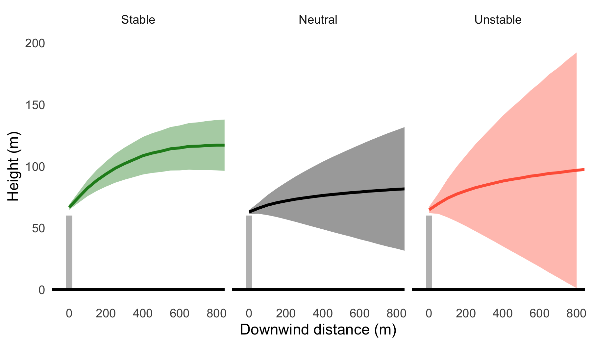
Just as in Section 8.2.1, we can illustrate the how concentrations are represented on polar plots when the radial axis is atmospheric stability (H/LMO). Figure 8.3 (a) shows how predicted concentrations vary with atmospheric stability with values close to zero corresponding to neutral conditions and positive values representing stable conditions. For the shallow volume source it is clear that the highest concentrations are observed under stable atmospheric conditions, which tend to also be conditions where the wind speed is low, as shown previously in Figure 8.1 (a).
By contrast, the stack dispersion pattern is very different (Figure 8.3 (b)) compared to the shallow volume source. Again, like Figure 8.1 (b) the plume is obvious, but in this case the highest concentrations are seen under unstable atmospheric conditions shown by negative values of H/LMO on the radial axis. These results show that the plume is being mixed down to the receptor when the atmosphere is unstable as illustrated in Figure 8.2.
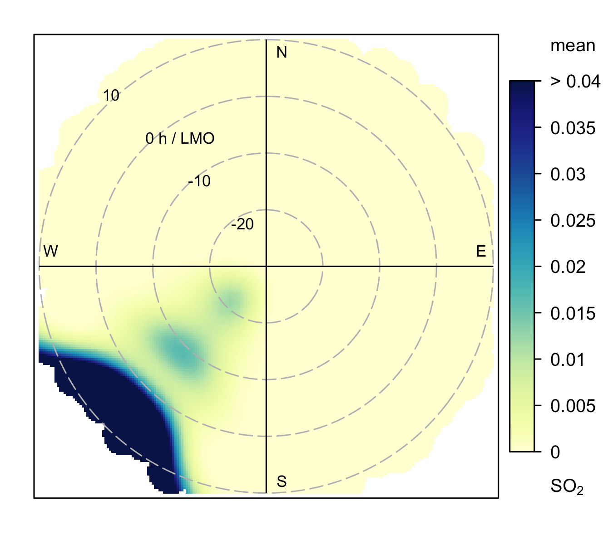
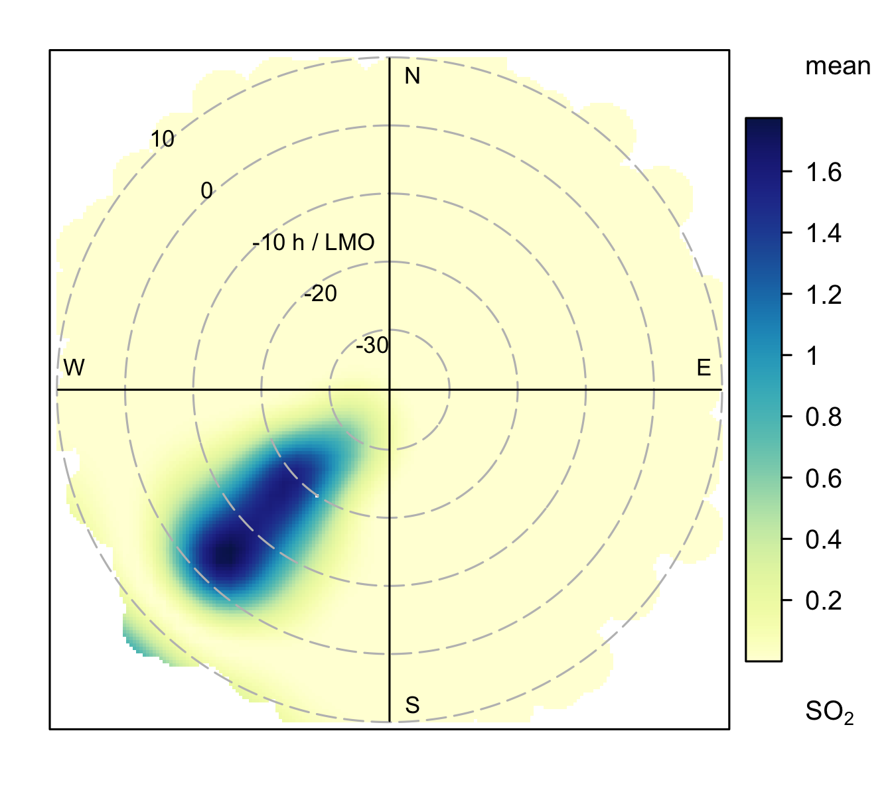
The patterns seen from the examples in this section provide some guidance on how to interpret polar plots. There are of course many other source types and situations that can be considered, but the ability to understand the patterns observed in real data in terms of underlying dispersion (or chemistry) is an important aspect of using these types of analysis effectively.
8.3 Examples
We first use the function in its simplest form to make a polar plot of NOx. The code is very simple as shown in Figure 8.4.
First, load the packages we need.
polarPlot(mydata, pollutant = "nox")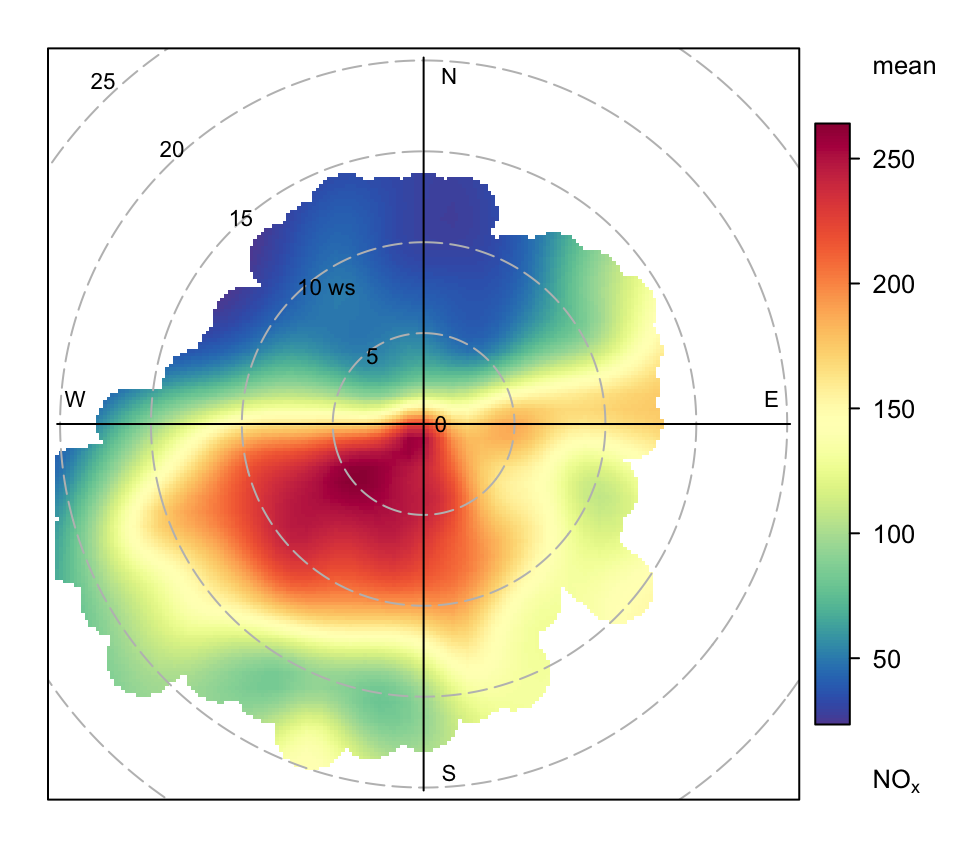
polarPlot function applied to Marylebone Road NOx concentrations.This produces Figure 8.4. The scale is automatically set using whatever units the original data are in. This plot clearly shows highest NOx concentrations when the wind is from the south-west. Given that the monitor is on the south side of the street and the highest concentrations are recorded when the wind is blowing away from the monitor is strong evidence of street canyon recirculation.
Figure 8.5 and Figure 8.6 shows polar plots using different defaults and for other pollutants. In the first (Figure 8.5), a different colour scheme is used and some adjustments are made to the key. In Figure 8.6, SO2 concentrations are shown. What is interesting about this plot compared with either Figure 8.5 or Figure 8.4 is that the concentration pattern is very different i.e. high concentrations with high wind speeds from the east. The most likely source of this SO2 are industrial sources to the east of London. The plot does still however show evidence of a source to the south-west, similar to the plot for NOx, which implies that road traffic sources of SO2 can also be detected.
These plots often show interesting features at higher wind speeds. For these conditions there can be very few measurements and therefore greater uncertainty in the calculation of the surface. There are several ways in which this issue can be tackled. First, it is possible to avoid smoothing altogether and use polarFreq. The problem with this approach is that it is difficult to know how best to bin wind speed and direction: the choice of interval tends to be arbitrary. Second, the effect of setting a minimum number of measurements in each wind speed-direction bin can be examined through min.bin. It is possible that a single point at high wind speed conditions can strongly affect the surface prediction. Therefore, setting min.bin = 3, for example, will remove all wind speed-direction bins with fewer than 3 measurements before fitting the surface. This is a useful strategy for testing how sensitive the plotted surface is to the number of measurements available. While this is a useful strategy to get a feel for how the surface changes with different min.bin settings, it is still difficult to know how many points should be used as a minimum. Third, consider setting uncertainty = TRUE. This option will show the predicted surface together with upper and lower 95% confidence intervals, which take account of the frequency of measurements. The uncertainty approach ought to be the most robust and removes any arbitrary setting of other options. There is a close relationship between the amount of smoothing and the uncertainty: more smoothing will tend to reveal less detail and lower uncertainties in the fitted surface and vice-versa.
The default however is to down-weight the bins with few data points when fitting a surface. Weights of 0.25, 0.5 and 0.75 are used for bins containing 1, 2 and 3 data points respectively. The advantage of this approach is that no data are actually removed (which is what happens when using min.bin). This approach should be robust in a very wide range of situations and is also similar to the approaches used when trying to locate sources when using back trajectories as described in Chapter 10. Users can ignore the automatic weighting by supplying the option weights = c(1, 1, 1).
## NOx plot
polarPlot(mydata, pollutant = "nox", col = "turbo",
key.position = "bottom",
key.header = "mean nox (ug/m3)",
key.footer = NULL)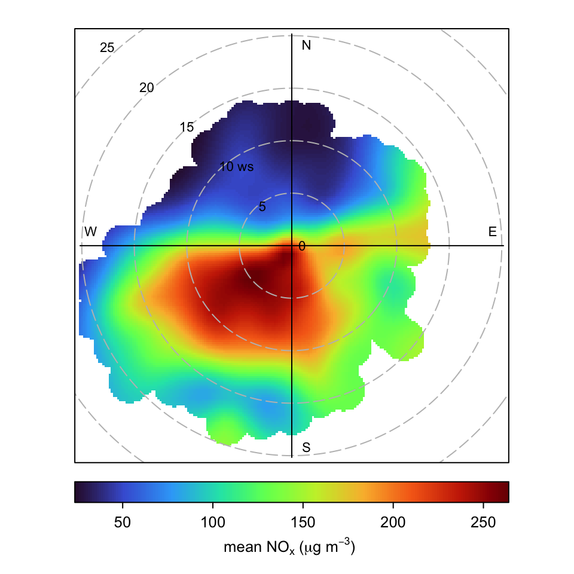
polarPlot function with different options for the mean concentration of NOx.polarPlot(mydata, pollutant = "so2")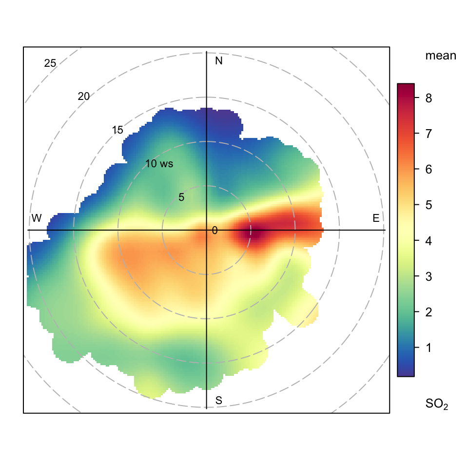
polarPlot function for the mean concentration of SO2.A very useful approach for understanding air pollution is to consider ratios of pollutants. One reason is that pollutant ratios can be largely independent of meteorological variation. In many circumstances it is possible to gain a lot of insight into sources if pollutant ratios are considered. First, it is necessary to calculate a ratio, which is easy in R. In this example we consider the ratio of SO2/NOx:
This makes a new variable called ratio. Sometimes it can be problematic if there are values equal to zero on the denominator, as is the case here. The mean and maximum value of the ratio is infinite, as shown by the Inf in the statistics below. Luckily, R can deal with infinity and the openair functions will remove these values before performing calculations. It is very simple therefore to calculate ratios.
summary(mydata$ratio) Min. 1st Qu. Median Mean 3rd Qu. Max. NA's
0.000 0.018 0.024 Inf 0.034 Inf 11782 A polar plot of the SO2/NOx ratio is shown in Figure 8.7. The plot highlights some new features not seen before. First, to the north there seems to be evidence that the air tends to have a higher SO2/NOx ratio. Also, the source to the east has a higher SO2/NOx ratio compared with that when the wind is from the south-west i.e. dominated by road sources. It seems therefore that the easterly source(s), which are believed to be industrial sources have a different SO2/NOx ratio compared with road sources. This is a very simple analysis, but ratios can be used effectively in many functions and are particularly useful in the presence of high source complexity.
Arguably a better approach would be to calculate the ratio (slope) from a regression, as described in Section 8.6. One reason is that simply dividing one concentration by another would include the effect of background concentrations, which could be large. A regression-based approach avoids this problem.
polarPlot(mydata, pollutant = "ratio", main = "so2/nox ratio")
Sometimes when considering ratios it might be necessary to limit the values in some way; perhaps due to some unusually low value denominator data resulting in a few very high values for the ratio. This is easy to do with the dplyr filter command. The code below selects ratios less than 0.1.
The uncertainties in the surface can be calculated by setting the option uncertainty = TRUE. The details are described above and here we show the example of SO2 concentrations (Figure 8.8). In general the uncertainties are higher at high wind speeds i.e. at the ‘fringes’ of a plot where there are fewer data. However, the magnitude depends on both the frequency and magnitude of the concentration close to the points of interest. The pattern of uncertainty is not always obvious and it can differ markedly for different pollutants.
polarPlot(mydata, pollutant = "so2", uncertainty = TRUE)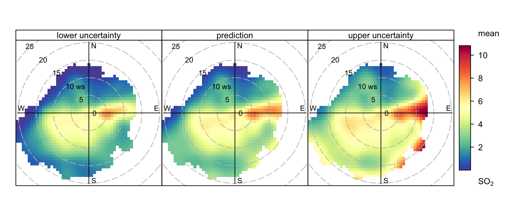
The polarPlot function can also produce plots dependent on another variable (see the type option). For example, the variation of SO2 concentrations at Marylebone Road by hour of the day in the code below. The function was called as shown in below, and in this case the minimum number of points in each wind speed/direction was set to 2.
polarPlot(mydata, pollutant = "so2", type = "hour", min.bin = 2)This plot shows that concentrations of SO2 tend to be highest from the east (as also shown in Figure 8.6 and for hours in the morning. Together these plots can help better understand different source types. For example, does a source only seem to be present during weekdays, or winter months etc. In the case of type = "hour", the more obvious presence during the morning hours could be due to meteorological factors and this possibility should be investigated as well. In other settings where there are many sources that vary in their source emission and temporal characteristics, the polarPlot function should prove to be very useful.
One issue to be aware of is the amount of data required to generate some of these plots; particularly the hourly plots. If only a relatively short time series is available there may not be sufficient information to produce useful plots. Whether this is important or not will depend on the specific circumstances e.g. the prevalence of wind speeds and directions from the direction of interest. When used to produce many plots (e.g. type = "hour"), the run time can be quite long.
8.4 Nonparametric Wind Regression, NWR
An alternative approach to modelling the surface concentrations with a GAM is to use kernel smoothers, as described by Henry et al. (2009). In NWR, smoothing is achieved using nonparametric kernel smoothers that weight concentrations on a surface according to their proximity to defined wind speed and direction intervals. In the approach adopted in openair (which is not identical to Henry et al. (2009)), Gaussian smoothers are used for both wind direction and wind speed. Unlike the default GAM approach in openair, the NWR technique works directly with the raw (often hourly) data. It tends to provide similar results to openair but may have advantages in certain situations e.g. when there is insufficient data available to use a GAM. The width of the Gaussian kernels (𝜎) is controlled by the options wd_spread and ws_spread.
An example for SO2 concentrations is shown in Figure 8.9, which can be compared with Figure 8.6.
polarPlot(mydata, pollutant = "so2", statistic = "nwr")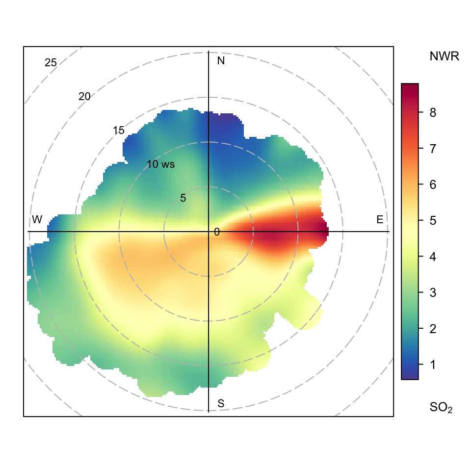
polarPlot of SO2 concentrations at Marylebone Road based on the NWR approach.8.5 Conditional Probability Function (CPF) plot
The conditional probability functions (CPF) was described in Section 7.3 in the context of the percentileRose function. The CPF was originally used to show the wind directions that dominate a (specified) high concentration of a pollutant; showing the probability of such concentrations occurring by wind direction Ashbaugh et al. (1985). However, these ideas can very usefully be applied to bivariate polar plots. In this case the CPF is defined as CPF = \(m_{\theta,j}/n_{\theta,j}\), where \(m_{\theta,j}\) is the number of samples in the wind sector \(\theta\) and wind speed interval \(j\) with mixing ratios greater than some ‘high’ concentration, and \(n_{\theta, j}\) is the total number of samples in the same wind direction-speed interval. Note that \(j\) does not have to be wind speed but could be any numeric variable e.g. ambient temperature. CPF analysis is very useful for showing which wind direction, wind speed intervals are dominated by high concentrations and give the probability of doing so. A full explanation of the development and use of the bivariate case of the CPF is described in Uria-Tellaetxe and Carslaw (2014) where it is applied to monitoring data close to steelworks.
polarPlot(mydata,
pollutant = "so2",
statistic = "cpf",
percentile = 90
)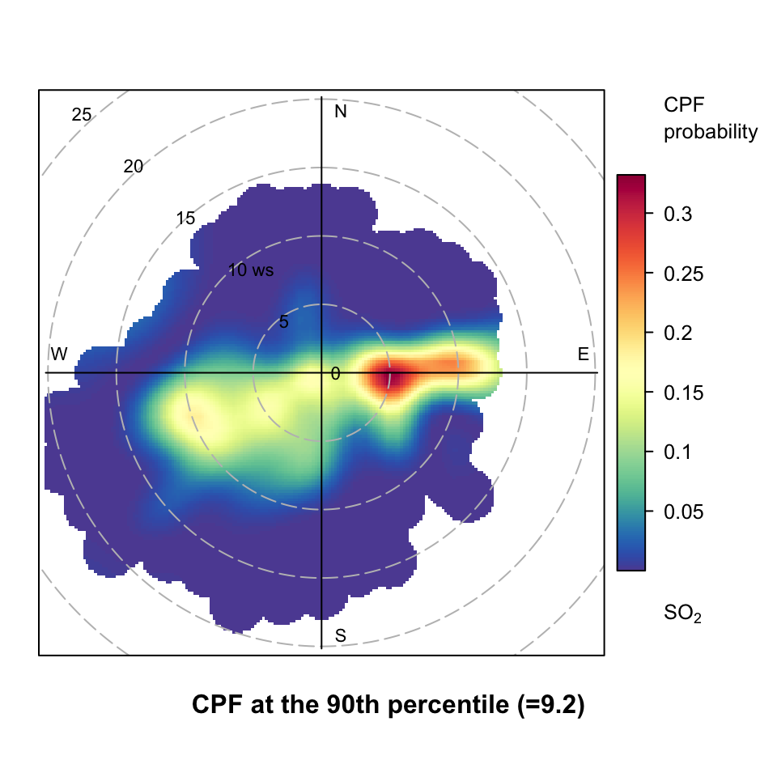
polarPlot of SO2 concentrations at Marylebone Road based on the CPF function.An example of a CPF polar plot is shown in Figure 8.10 for the 90th percentile concentration of SO2. This plot shows that for most wind speed-directions the probability of SO2 concentrations being greater than the 90th percentile is zero. The clearest areas where the probability is higher is to the east. Indeed, the plot now clearly reveals two potential sources of SO2, which are not as apparent in the ‘standard’ plot shown in Figure 8.6. Note that Figure 8.10 also gives the calculated percentile at the bottom of the plot (9.2 ppb in this case). Figure 8.10 can also be compared with the CPF plot based only on wind direction shown in Figure 7.4. While Figure 7.4 very clearly shows that easterly wind dominate high concentrations of SO2, Figure 8.10 provides additional valuable information by also considering wind speed, which in this case is able to discriminate between two sources (or groups of sources) to the east.
The polar CPF plot is therefore potentially very useful for source identification and characterisation. It is, for example, worth also considering other percentile levels and other pollutants. For example, considering the 95th percentile for SO2 ‘removes’ one of the sources (the one at highest wind speed). This helps to show some maybe important differences between the sources that could easily have been missed. Similarly, considering other pollutants can help build up a good understanding of these sources. A CPF plot for NO2 at the 90th percentile shows the single dominance of the road source. However, a CPF plot at the 75th percentile level indicates source contributions from the east (likely tall stacks), which again are not as clear in the standard bivariate polar plot. Considering a range of percentile values can therefore help to build up a more complete understanding of source contributions.
polarPlot(mydata, poll = "so2", stati = "cpf", percentile = c(0, 10))
polarPlot(mydata, poll = "so2", stati = "cpf", percentile = c(10, 20))
polarPlot(mydata, poll = "so2", stati = "cpf", percentile = c(20, 30))
polarPlot(mydata, poll = "so2", stati = "cpf", percentile = c(30, 40))
polarPlot(mydata, poll = "so2", stati = "cpf", percentile = c(40, 50))
polarPlot(mydata, poll = "so2", stati = "cpf", percentile = c(50, 60))
polarPlot(mydata, poll = "so2", stati = "cpf", percentile = c(60, 70))
polarPlot(mydata, poll = "so2", stati = "cpf", percentile = c(70, 80))
polarPlot(mydata, poll = "so2", stati = "cpf", percentile = c(80, 90))
polarPlot(mydata, poll = "so2", stati = "cpf", percentile = c(90, 100))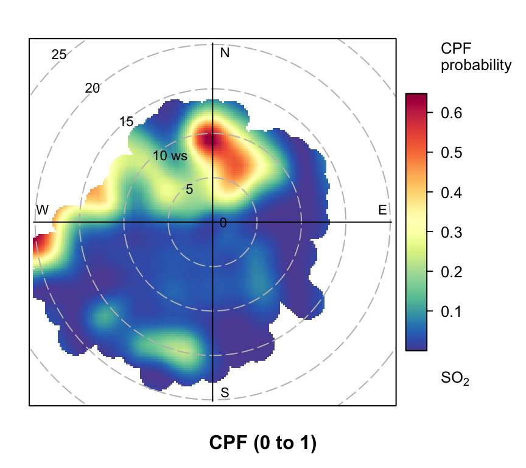
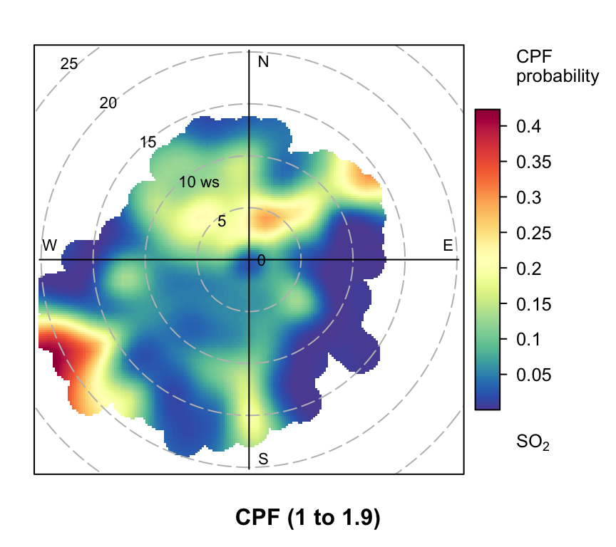
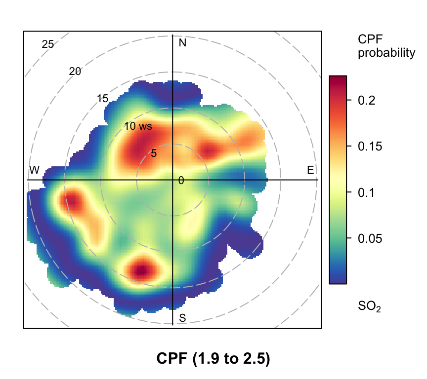
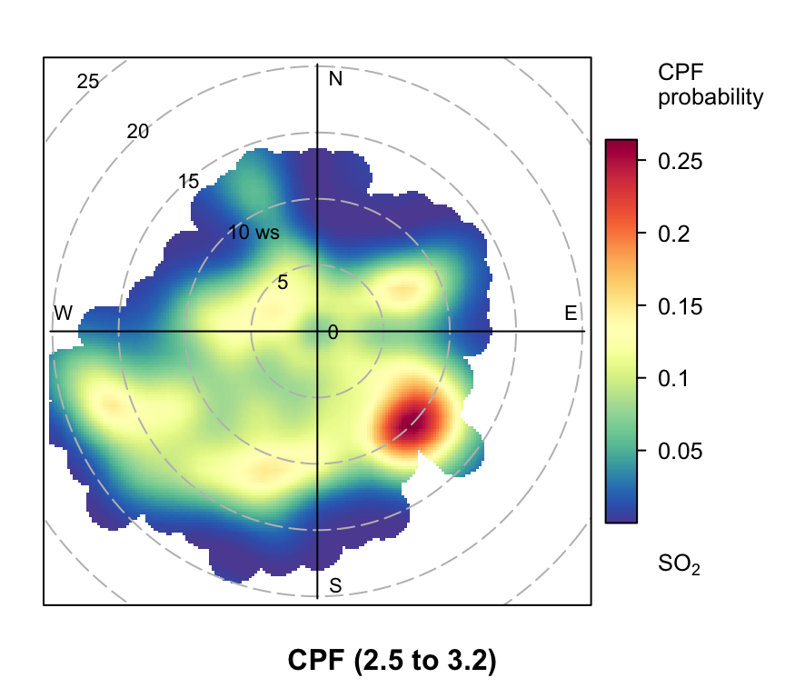
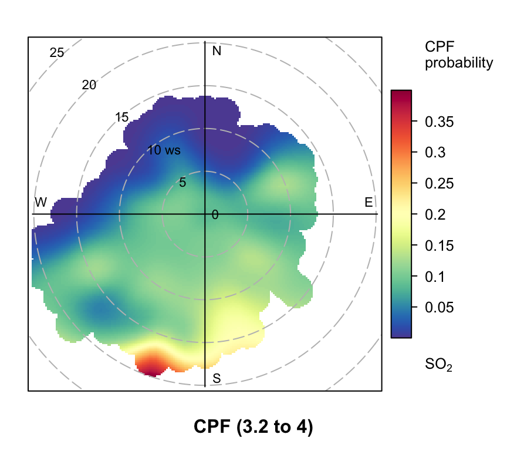
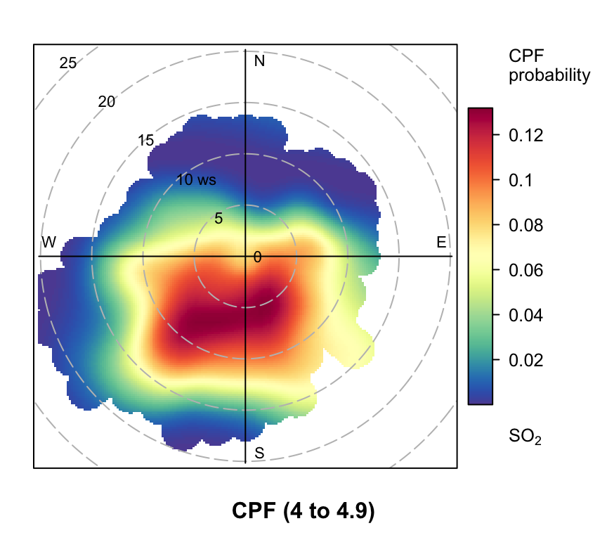
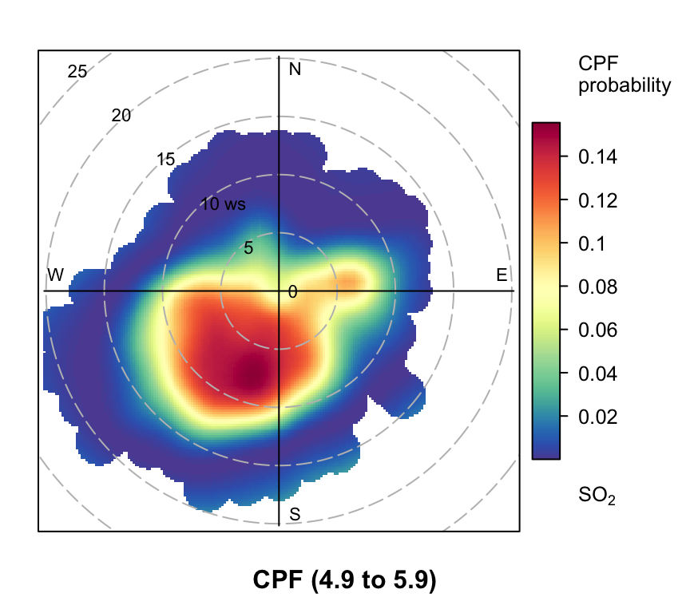
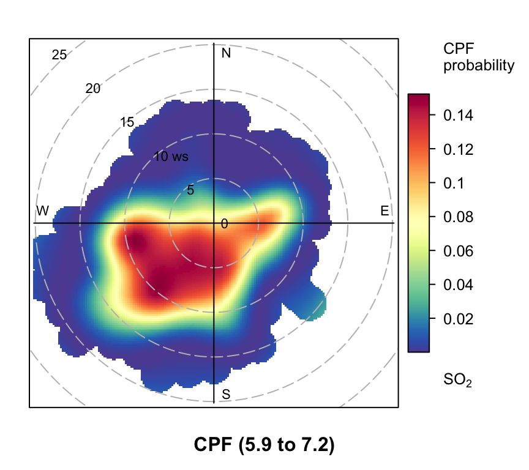
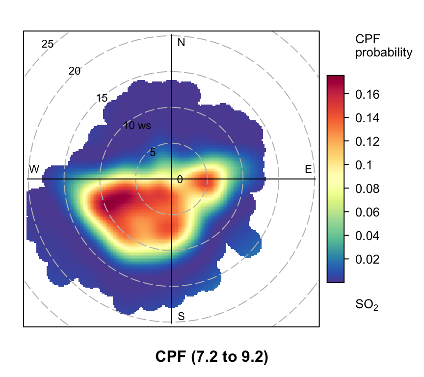
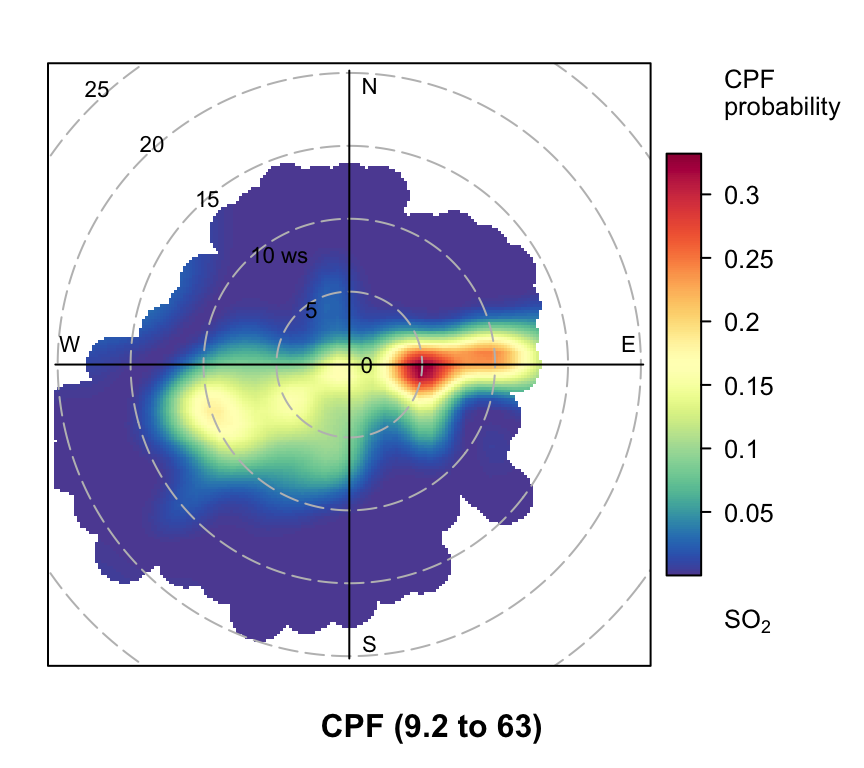
polarPlot of SO2 concentrations at Marylebone Road based on the CPF function for a range of percentile intervals from 0–10, 10–20, … , 90–100.However, even more useful information can be gained by considering intervals of percentiles e.g. 50–60, 60–70 etc. By considering intervals of percentiles it becomes clear that some sources only affect a limited percentile range. polarPlot can accept a percentile argument of length two e.g. percentile = c(80, 90). In this case concentrations in the range from the lower to upper percentiles will be considered. In Figure 8.11 for example, it is apparent that the road source to the south west is only important between the 60 to 90th percentiles. As mentioned previously, the chimney stacks to the east are important for the higher percentiles (90 to 100). What is interesting though is the emergence of what appears to be other sources at the lower percentile intervals. These potential sources are not apparent in Figure 8.6. The other interesting aspect is that it does seem that specific sources tend to be prominent for specific percentile ranges. If this characteristic is shown to be the case more generally, then CPF intervals could be a powerful way in which to identify many sources. Whether these particular sources are important or not is questionable and depends on the aims of the analysis. However, there is no reason to believe that the potential sources shown in the percentile ranges 0 to 50 are artefacts. They could for example be signals from more distant point sources whose plumes have diluted more over longer distances. Such sources would be ‘washed out’ in an ordinary polar plot. For a fuller example of this approach see Uria-Tellaetxe and Carslaw (2014).
Note that it is easy to work out what the concentration intervals are for the percentiles shown in Figure 8.11:
0% 10% 20% 30% 40% 50% 60% 70% 80% 90%
0.0000 1.0125 1.8825 2.5000 3.2500 4.0000 4.9375 5.9100 7.2375 9.2500
100%
63.2050 To plot the Figures on one page it is necessary to make the plot objects first and then decide how to plot them. To plot the Figures in a particular layout see Section 2.9.
8.6 Pairwise statistics
Grange et al. (2016) further developed the capabilities of the polarPlot function by allowing pairwise statistics to be used. This method makes it possible to consider the relationship between two pollutants to be considered. The relationship between two pollutants often yields useful source apportionment information and when combined with the polarPlot function can provide enhanced information. The pairwise statistics that can be considered include:
The Pearson or Spearman correlation coefficient, \(r\);
The robust slope (gradient) resulting from a linear regressions between two pollutants.
The quantile slope from a quantile regression applied to two variables with a quantile value of \(tau\). By default, the median slope (i.e. \(tau\) = 0.5) is used by the actual level can be set by the user.
‘York’ regression that accounts for errors in the ‘x’ and the ‘y’ variables.
The calculation involves a weighted Pearson correlation coefficient, which is weighted by Gaussian kernels for wind direction and the radial variable (by default wind speed). More weight is assigned to values close to a wind speed-direction interval. Kernel weighting is used to ensure that all data are used rather than relying on the potentially small number of values in a wind speed-direction interval. Two important settings are ws_spread and wd_spread that determine the σ value used in the Gaussian kernel weightings. Setting these values too low will result in potentially noisy results. As a guide, values of ws_spread around a tenth of the maximum wind speed seem reasonable and 5-10° for wd_spread.
An example usage scenario is that measurements of metal concentrations are made close to a steelworks where there is interest in understanding the principal sources. While it is useful to consider the correlation between potentially many metal concentrations, the contention is that if the correlation is also considered as a function of wind speed and direction, improved information will be available of the types of sources contributing. For example, it may be that Fe and Mn are quite strongly correlated overall, but they tend to be most correlated under specific wind speed and direction ranges — suggesting a specific source origin.
As an example of usage we will consider the relationship between PM2.5 and PM10 at the rural Harwell site in Oxfordshire. Additionally, we will use meteorological data from a nearby site rather than rely on modelled values that are provided in importAURN.
library(worldmet) # to access met data
library(tidyverse)
har <- importAURN("har", year = 2013)
# import met data from nearby site (Benson)
met <- importNOAA(code = "036580-99999", year = 2013)
# merge AQ and met but don't use modelled ws and wd
har <- inner_join(
select(har, -ws, -wd, -air_temp),
met,
by = "date"
)An example pairwise regression surface relationship relating PM2.5 and PM10 is shown in Figure 8.12. This plot reveals that almost all the PM10 is in the form of PM2.5 when the wind has an easterly component, which is attributed to the large secondary contribution likely dominated by ammonium nitrate.
A simple scatter plot between PM2.5 and PM10 strongly suggests a 1:1 relationship and it is not obvious that there is a higher PM2.5/PM10 ratio when the wind is from the east.
polarPlot(har,
poll = c("pm2.5", "pm10"),
statistic = "robust_slope",
col = "turbo",
limits = c(0, 1),
ws_spread = 1.5,
wd_spread = 10
)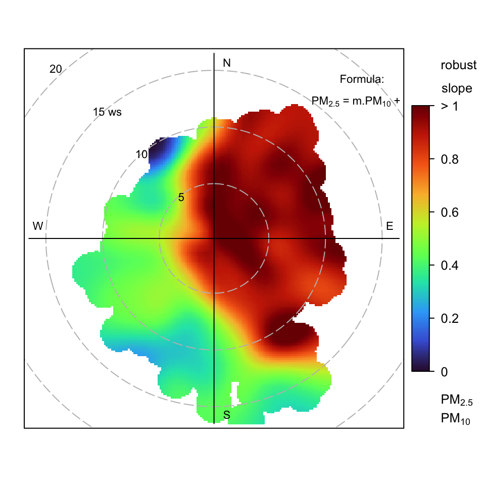
polarPlot function to investigate the linear regression slope between PM2.5 and PM10 at Harwell in 2013. In this case the robust slope is calculated.The York regression option requires special mention. In ordinary linear regression it is assumed there is no error in the ‘x’ variable. However, in atmospheric science, the interest is often in regressing two variables that both have uncertainty. There are various methods available, such as Reduced Major Axis (RMA) regression. However, a more general solution to this problem was solved a long time ago by the geophysicist Derek York from the University of Toronto (York 1968; York et al. 2004).2 While the York approach is ideally suited to atmospheric applications, the challenge may be obtaining the uncertainties in the measurements themselves. As discussed in Wu and Yu (2018), the York approach can still work well if the error in one of the variables is unknown or the measurement error cannot be trusted. In the example below, the errors are estimated and fixed for illustration purposes, but in many applications could be provided directly based on how well an instrument performs.
# assign simple / fixed uncertainties
har <- mutate(har, pm10_error = 2, pm2.5_error = 2)
polarPlot(har,
poll = c("pm2.5", "pm10"),
statistic = "york_slope",
col = "turbo",
limits = c(0, 1),
ws_spread = 1.5,
wd_spread = 10,
x_error = "pm10_error",
y_error = "pm2.5_error"
)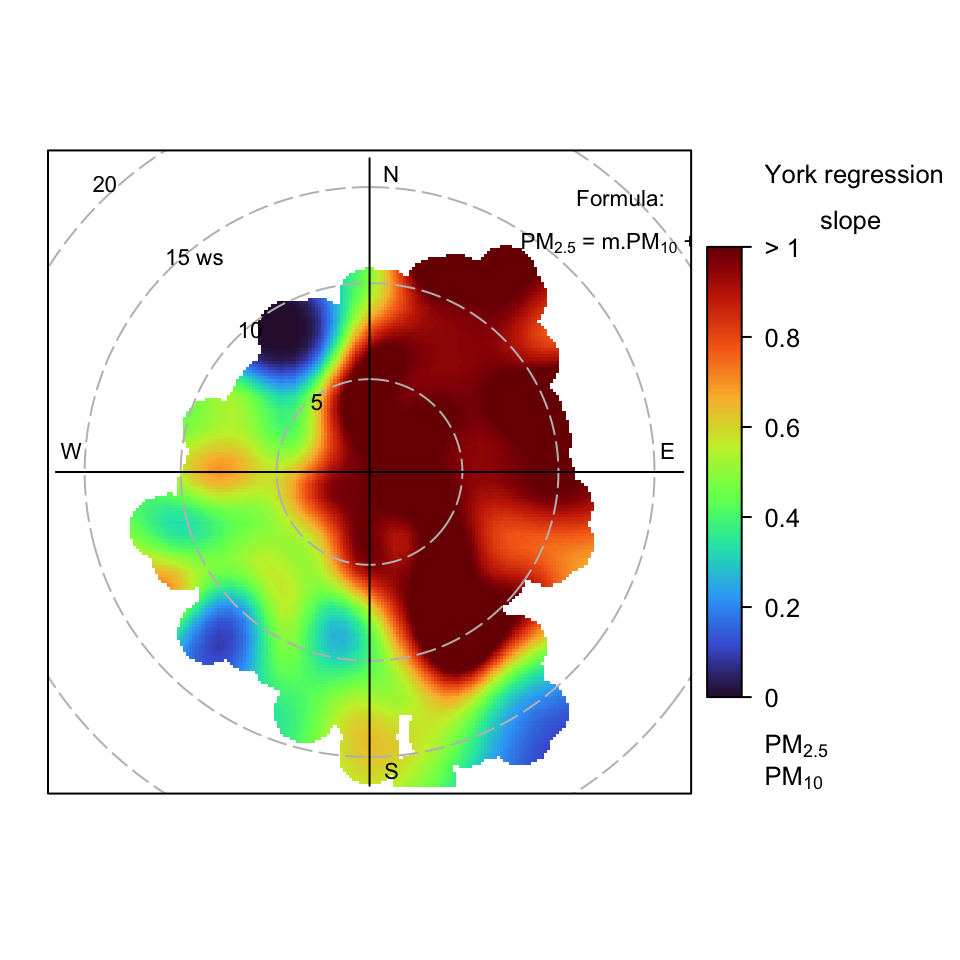
polarPlot function to investigate the linear regression slope between PM2.5 and PM10 at Harwell in 2013. In this case the York regression slope is calculated.8.7 Comparing two time periods
Polar plots can be useful for characterising the presence of different source types. Often the interest is in knowing how things have changed over time. It can be difficult from time series data alone to characterise these changes — and especially whether there is evidence that particular sources have changed their strength.
The polarDiff function has been written to compare polar plot surfaces between two time periods. The main purpose is to highlight whether there is evidence that source strengths may have changed. To illustrate the use of polarDiff data from a site close to a complex steelworks is used (Port Talbot in Wales). Two years will be compared as an example: 2012 and 2019. First, we need to import the air quality data for these two years:
port_talbot <- importAURN(site = "pt4", year = c(2012, 2019))
port_talbot# A tibble: 17,544 × 18
site code date co nox no2 no o3 so2 pm10
<chr> <chr> <dttm> <dbl> <dbl> <dbl> <dbl> <dbl> <dbl> <dbl>
1 Port Tal… PT4 2012-01-01 00:00:00 0.12 11 11 0 44 3 13
2 Port Tal… PT4 2012-01-01 01:00:00 0.12 11 11 0 44 0 17
3 Port Tal… PT4 2012-01-01 02:00:00 0.12 11 11 0 46 0 16
4 Port Tal… PT4 2012-01-01 03:00:00 0.47 15 15 0 42 3 40
5 Port Tal… PT4 2012-01-01 04:00:00 0.81 13 13 0 40 5 48
6 Port Tal… PT4 2012-01-01 05:00:00 1.05 13 13 0 40 8 40
7 Port Tal… PT4 2012-01-01 06:00:00 1.16 15 13 1 40 8 45
8 Port Tal… PT4 2012-01-01 07:00:00 1.05 21 19 1 40 11 47
9 Port Tal… PT4 2012-01-01 08:00:00 1.28 19 17 1 40 11 44
10 Port Tal… PT4 2012-01-01 09:00:00 1.28 23 19 2 38 8 46
# … with 17,534 more rows, and 8 more variables: pm2.5 <dbl>, v10 <dbl>,
# v2.5 <dbl>, nv10 <dbl>, nv2.5 <dbl>, ws <dbl>, wd <dbl>, air_temp <dbl>8.7.1 Differences in absolute concentrations
We can now generate a polar plot of the difference between the two years (2019 with 2012 subtracted). The first example if for SO2. The three main arguments for the function are the ‘before’ data, the ‘after’ data and pollutant name.
polarDiff(before = selectByDate(port_talbot, year = 2012),
after = selectByDate(port_talbot, year = 2019),
pollutant = "so2")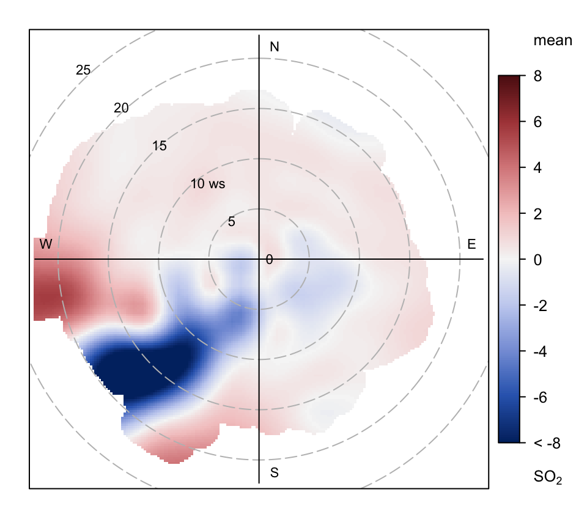
Figure 8.14 shows very clearly an area to the south-west where concentrations of SO2 have decreased considerably between 2012 and 2019, perhaps due to mitigation measures on the steelworks. Interestingly, the analysis for PM10 shown in Figure 8.15 shows a distinct area of increased concentration to the WSW, which would merit further investigation.
polarDiff(before = selectByDate(port_talbot, year = 2012),
after = selectByDate(port_talbot, year = 2019),
pollutant = "pm10")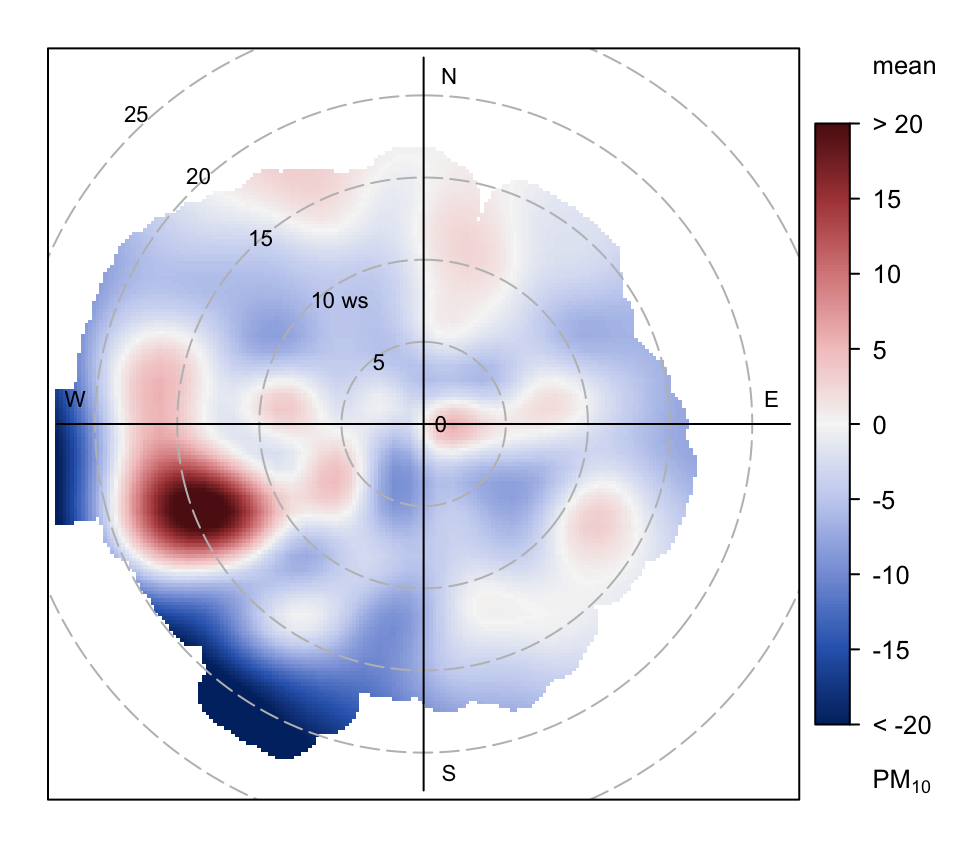
When selecting the periods, it is possible to refine the specific periods of interest using the selectByDate function described in Section 25.1. For example, a comparison might usefully consider weekdays only, or certain hours of the year, and so on. Such time period selections can quickly ‘home in’ on specific source types by focusing on the periods they are likely to be most active.
8.7.2 Differences in probability that a concentration is exceeded
The polarDiff function is also not restricted to comparing two time periods. Any two surfaces can be compared (provided the same pollutant is in each data set). For example, it is possible to consider the difference between two nearby sites or two co-located instruments.
Differences between two time periods can also be considered using the statistic = "cpf" option, which would highlight how the probability that a concentration is exceeded between two time periods changes. This approach has also been considered for back trajectories Masiol et al. (2019). Some care is needed to ensure the probabilities that a specific concentration is exceeded because (for example) the 90th percentile concentration in one period will likely not be the same in another period.
Using the example of SO2 we can consider the probability that 10 μg m-3 (close to the 90th percentile in 2012 — but could be an air quality standard for example) is exceeded and how this changes over time. In this case, the percentile has length 3 (percentile = c(10, 100, -1)). The last negative number instructs polarPlot to interpret the the previous two numbers in an absolute sense — in this case that the SO2 concentration is more than 10 and less than 100 μg m-3. Note that the 100 μg m-3 is higher than the maximum concentration, which effectively means it provides the probability that the SO2 concentration is above 10 μg m-3; so it could be any number higher than the maximum value that exists in the data.
polarDiff(before = selectByDate(port_talbot, year = 2012),
after = selectByDate(port_talbot, year = 2019),
pollutant = "so2",
statistic = "cpf",
percentile = c(10, 100, -1),
limits = c(-0.5, 0.5))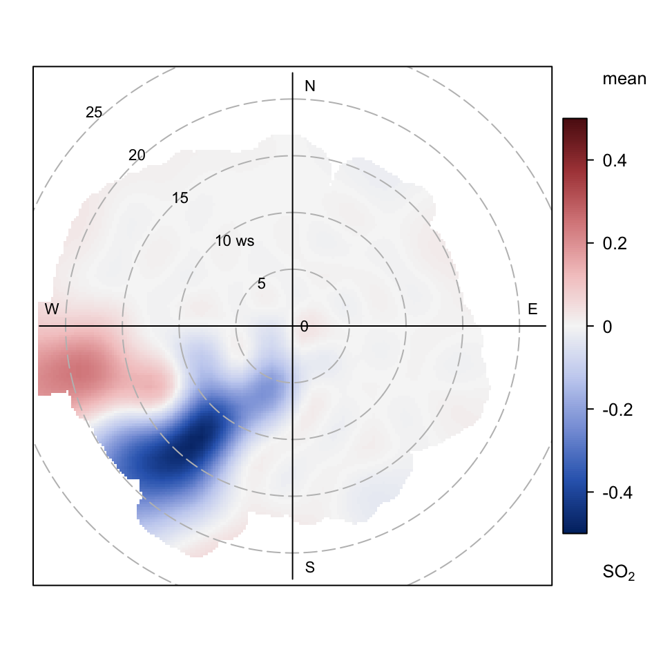
Figure 8.16 effectively shows there has been a clear reduction in the probability that 10 μg m-3 is exceeded between 2012 and 2019 when the wind is from the south-west.
8.8 Clustering
8.8.1 Clustering concentrations
The polarPlot function will often identify interesting features that would be useful to analyse further. It is possible to select areas of interest based only on a consideration of a plot. Such a selection could be based on wind direction and wind speed intervals for example e.g.
subdata <- filter(mydata, ws > 3, wd >= 180, wd <= 270)which would select wind speeds >3 m s-1 and wind directions from 180 to 270 degrees from mydata. That subset of data, subdata, could then be analysed using other functions. While this approach may be useful in many circumstances it is rather arbitrary. In fact, the choice of ‘interesting feature’ in the first place can even depend on the colour scale used, which is not very robust. Furthermore, many interesting patterns can be difficult to select and won’t always fall into convenient intervals of other variables such as wind speed and direction.
A better approach is to use a method that can select group similar features together. One such approach is to use cluster analysis. openair uses k-means clustering as a way in which bivariate polar plot features can be identified and grouped. The main purpose of grouping data in this way is to identify records in the original time series data by cluster to enable post-processing to better understand potential source characteristics. The process of grouping data in k-means clustering proceeds as follows. First, \(k\) points are randomly chosen form the space represented by the objects that are being clustered into \(k\) groups. These points represent initial group centroids. Each object is assigned to the group that has the closest centroid. When all objects have been assigned, the positions of the \(k\) centroids is re-calculated. The previous two steps are repeated until the centroids no longer move. This produces a separation of the objects into groups from which the metric to be minimised can be calculated.
Central to the idea of clustering data is the concept of distance i.e. some measure of similarity or dissimilarity between points. Clusters should be comprised of points separated by small distances relative to the distance between the clusters. Careful consideration is required to define the distance measure used because the effectiveness of clustering itself fundamentally depends on its choice. The similarity of concentrations shown in Figure 8.4 for example is determined by three variables: the \(u\) and \(v\) wind components and the concentration. All three variables are equally important in characterising the concentration-location information, but they exist on different scales i.e. a wind speed-direction measure and a concentration. Let \(X = \{x_i\}, i = 1,\ldots,n\) be a set of \(n\) points to be clustered into \(K\) clusters, \(C = \{c_k, k = 1,\ldots,K\}\). The basic k-means algorithm for \(K\) clusters is obtained by minimising:
\[ \sum_{k=1}^{K} \sum_{x_i \in c_k} || x_i - \mu_k ||^2 \tag{8.4}\]
where \(|| x_i - \mu_k ||^2\) is a chosen distance measure, \(\mu_k\) is the mean of cluster \(c_k\).
The distance measure is defined as the Euclidean distance:
\[ d_{x, y} = \left({\sum_{j=1}^{J} (x_j - y_j) ^ 2}\right)^{1/2} \tag{8.5}\]
Where x and y are two J-dimensional vectors, which have been standardized by subtracting the mean and dividing by the standard deviation. In the current case \(J\) is of length three i.e. the wind components \(u\) and \(v\) and the concentration \(C\), each of which is standardized e.g.:
\[ x_j = \left(\frac{x_j - \overline{x}}{\sigma_x}\right) \tag{8.6}\]
Standardization is necessary because the wind components \(u\) and \(v\) are on different scales to the concentration. In principle, more weight could be given to the concentration rather than the \(u\) and \(v\) components, although this would tend to identify clusters with similar concentrations but different source origins.
polarCluster can be thought of as the ‘local’ version of clustering of back trajectories. Rather than using air mass origins, wind speed, wind direction and concentration are used to group similar conditions together. Section 10.8 provides the details of clustering back trajectories in openair. A fuller description of the clustering approach is described in (Carslaw and Beevers 2013).
The use of the polarCluster is very similar to the use of all openair functions. While there are many techniques available to try and find the optimum number of clusters, it is difficult for these approaches to work in a consistent way for identifying features in bivariate polar plots. For this reason it is best to consider a range of solutions that covers a number of clusters.
Cluster analysis is computationally intensive and the polarCluster function can take a comparatively long time to run. The basic idea is to calculate the solution to several cluster levels and then choose one that offers the most appropriate solution for post-processing.
The example given below is for concentrations of SO2, shown in Figure 8.6 and the aim is to identify features in that plot. A range of numbers of clusters will be calculated — in this case from two to ten.
polarCluster(mydata, pollutant="so2", n.clusters=2:10, cols= "Set2")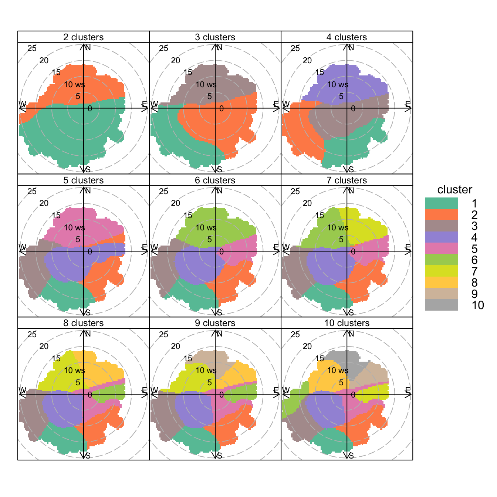
polarCluster function applied to SO2 concentrations at Marylebone Road. In this case 2 to 10 clusters have been chosen.results <- polarCluster(mydata,
pollutant = "so2",
n.clusters = 8,
cols = "Set2"
)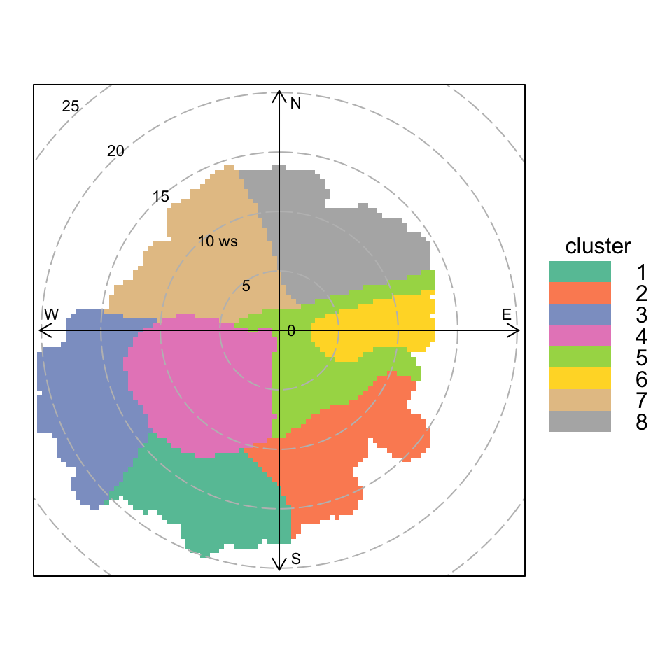
polarCluster function applied to SO2 concentrations at Marylebone Road. In this case 8 clusters have been chosen.The real benefit of polarCluster is being able to identify clusters in the original data frame. To do this, the results from the analysis must be read into a new variable, as in Figure 8.18, where the results are read into a data frame results. Now it is possible to use this new information. In the 8-cluster solution to Figure 8.18, cluster 6 seems to capture the elevated SO2 concentrations to the east well (see Figure 8.6 for comparison), while cluster 5 will strongly represent the road contribution.
The results are here:
head(results[["data"]])# A tibble: 6 × 13
date ws wd nox no2 o3 pm10 so2 co pm25
<dttm> <dbl> <int> <int> <int> <int> <int> <dbl> <dbl> <int>
1 1998-01-01 00:00:00 0.6 280 285 39 1 29 4.72 3.37 NA
2 1998-01-01 01:00:00 2.16 230 NA NA NA 37 NA NA NA
3 1998-01-01 02:00:00 2.76 190 NA NA 3 34 6.83 9.60 NA
4 1998-01-01 03:00:00 2.16 170 493 52 3 35 7.66 10.2 NA
5 1998-01-01 04:00:00 2.4 180 468 78 2 34 8.07 8.91 NA
6 1998-01-01 05:00:00 3 190 264 42 0 16 5.50 3.05 NA
# … with 3 more variables: ratio <dbl>, .id <int>, cluster <chr>Note that there is an additional column cluster that gives the cluster a particular row belongs to and that this is a character variable. It might be easier to read these results into a new data frame:
results <- results[["data"]]It is easy to find out how many points are in each cluster:
table(results[["cluster"]])
C1 C2 C3 C4 C5 C6 C7 C8
247 424 125 24241 16161 2590 7764 2755 Now other openair analysis functions can be used to analyse the results. For example, to consider the temporal variations by cluster:
timeVariation(results, pollutant = "so2", group = "cluster",
key.columns = 4,
col = "Set2", ci = FALSE, lwd = 3)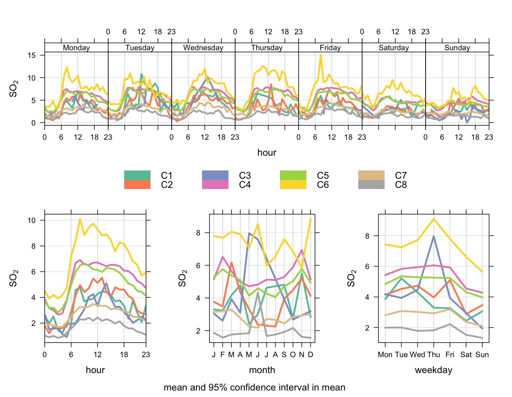
Or if we just want to plot a couple of clusters (5 and 6) using the same colours as in Figure 8.18:
timeVariation(
dplyr::filter(results, cluster %in% c("C5", "C6")),
pollutant = "so2",
group = "cluster",
col = openColours("Set2", 8)[5:6],
lwd = 3
)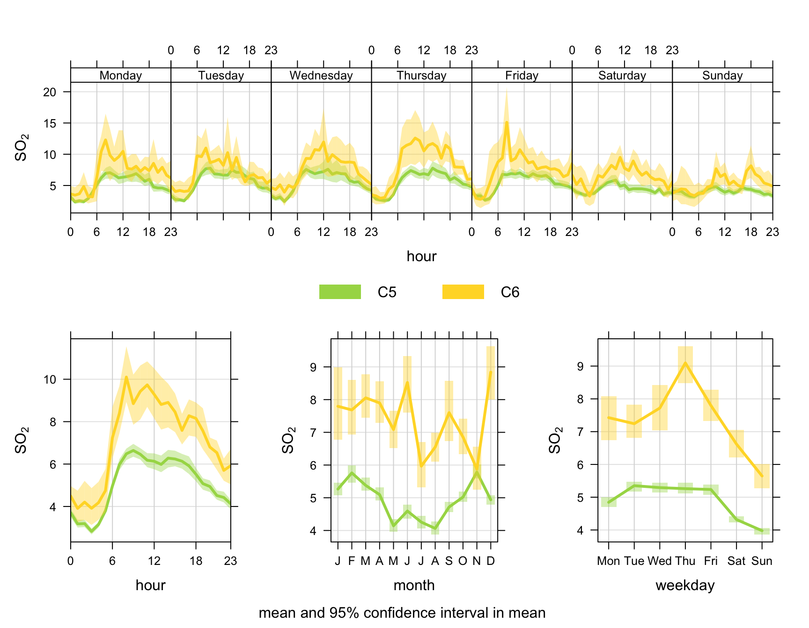
polarCluster will work on any surface that can be plotted by polarPlot e.g. the radial variable does not have to be wind speed but could be another variable such as temperature. While it is not always possible for polarCluster to identify all features in a surface it certainly makes it easier to post-process polarPlots using other openair functions or indeed other analyses altogether.
Another useful way of understanding the clusters is to use the timeProp function, which can display a time series as a bar chart split by a categorical variable (in this case the cluster). In this case it is useful to plot the time series of SO2and show how much of the concentration is contributed to by each cluster. Such a plot is shown in Figure 8.21. It is now easy to see for example that many of the peaks in SO2 are associated with cluster 6 (power station sources from the east), seen in Figure 8.18. Cluster 6 is particularly prominent during springtime, but those sources also make important contributions through the whole year.
timeProp(
selectByDate(results, year = 2003),
pollutant = "so2",
avg.time = "day",
proportion = "cluster",
col = "Set2",
key.position = "top",
key.columns = 8,
date.breaks = 10,
ylab = "so2 (ug/m3)"
)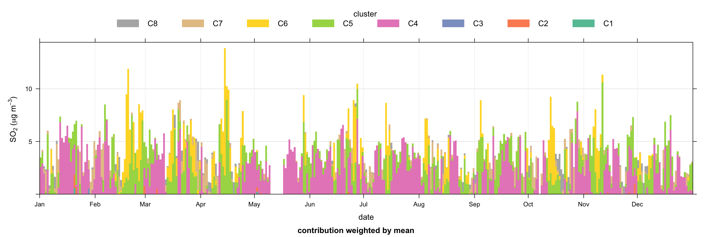
8.8.2 Clustering differences in concentrations
Section 8.7 showed how to consider differences in polar plot surfaces, which can be useful for considering how source strengths may have changed in time. This section considers how to apply cluster analysis to these difference surfaces. The clustering works in the same way as shown earlier in this section but with an additional argument (after) which represents the second data frame used to calculate the difference between two surfaces.
The function is called as shown in Figure 8.22. Note that the output is recorded in clust_out. The clustering is applied to the difference plots shown in Figure 8.14.
clust_out <- polarCluster(selectByDate(port_talbot, year = 2012),
after = selectByDate(port_talbot, year = 2019),
pollutant = "so2",
n.clusters = 5
)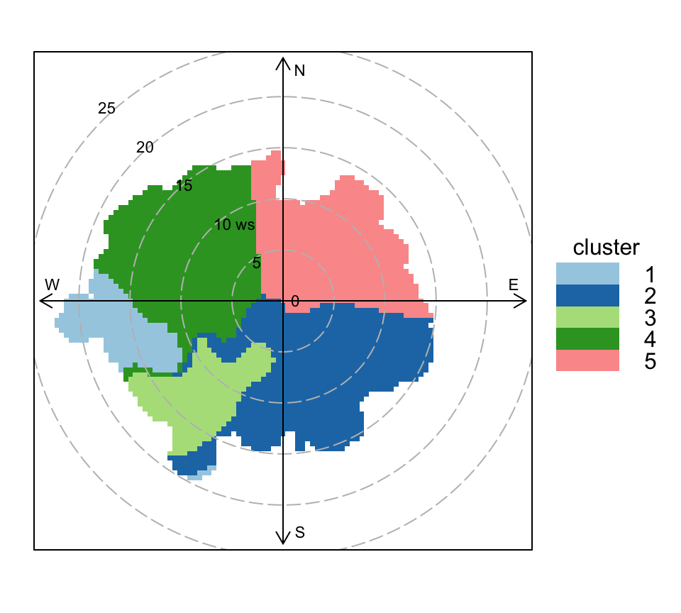
The clust_out usefully contains the two original data sets that were used to make the difference surface as well as the assigned cluster. These two outputs can be combined and post-processed in different ways. In the code below the mean concentrations by cluster are calculated but other useful analyses could be considered knowing that Cluster 3 is most strongly associated with the change in SO2 concentration. The latter point is important because clustering features by how they change ought to provide an improved analysis of the effect of interventions — rather than just considering absolute concentrations in a before or after period.
clust_data <- bind_rows(clust_out$data, clust_out$after)
# consider mean SO2 by cluster
group_by(clust_data, cluster) %>%
summarise(mean_so2 = mean(so2, na.rm = TRUE))# A tibble: 11 × 2
cluster mean_so2
<chr> <dbl>
1 1 10.1
2 2 3.33
3 3 10.6
4 4 1.93
5 5 1.32
6 C1 5.99
7 C2 4.10
8 C3 16.6
9 C4 2.27
10 C5 1.02
11 <NA> 5.178.9 Polar plots on an interactive map
An R package called openairmaps has been developed to plot polar plots and other “directional analysis” visualisations on interactive leaflet maps. This package can be installed from CRAN, similar to openair.
install.packages("openairmaps")The function polarMap requires information on the site (name or code), latitude and longitude in addition to the usual information required by the polarPlot function. The package comes with some example data (polar_data) that can be used as a template for using different data. This function can plot any type of polar plot, e.g., with different options for statistic.
First, load the package and check out the data format.
library(openairmaps)
glimpse(polar_data)Rows: 35,040
Columns: 13
$ date <dttm> 2009-01-01 00:00:00, 2009-01-01 01:00:00, 2009-01-01 02:00…
$ nox <dbl> 113, 40, 48, 36, 40, 50, 50, 53, 80, 111, 206, 113, 86, 82,…
$ no2 <dbl> 46, 32, 36, 29, 32, 36, 34, 34, 50, 59, 67, 61, 52, 53, 52,…
$ pm2.5 <dbl> 42, 45, 43, 37, 36, 33, 33, 31, 27, 28, 37, 30, 27, 29, 27,…
$ pm10 <dbl> 46, 49, 46, NA, 38, 32, 36, 32, 30, 32, 39, 37, 32, 33, 34,…
$ site <chr> "London Bloomsbury", "London Bloomsbury", "London Bloomsbur…
$ lat <dbl> 51.52229, 51.52229, 51.52229, 51.52229, 51.52229, 51.52229,…
$ lon <dbl> -0.125889, -0.125889, -0.125889, -0.125889, -0.125889, -0.1…
$ site_type <chr> "Urban Background", "Urban Background", "Urban Background",…
$ wd <dbl> 58.92536, 74.46675, 30.00000, 45.00000, 70.00000, 46.63627,…
$ ws <dbl> 2.066667, 1.900000, 1.550000, 2.100000, 1.500000, 2.100000,…
$ visibility <dbl> 5000.000, 4933.333, 5000.000, 4900.000, 5000.000, 6000.000,…
$ air_temp <dbl> 0.8666667, 0.8666667, 0.8000000, 0.8500000, 0.8666667, 0.96…Plot an interactive map.
polarMap(
polar_data,
latitude = "lat",
longitude = "lon",
pollutant = "nox"
)The polarMap function allows for control of many parts of the leaflet map. For example, you can provide one (or more) different base map(s) — there are many! You may also visualise multiple pollutants at once which can then be toggled between.
polarMap(openairmaps::polar_data,
pollutant = c("nox", "no2"),
latitude = "lat",
longitude = "lon",
provider = "CartoDB.Positron")Note that if you are using the importAURN family of functions it is useful to add the option meta = TRUE, which will return the latitude and longitude of the site together with the air quality data.
openairmaps isn’t limited to just polarMap — almost any kind of “directional analysis” plot can be placed on a map. There are many similar functions which correspond to other openair plotting functions; annulusMap, freqMap, percentileMap, polarMap, pollroseMap, and windroseMap.
For more information about using openairmaps to create maps with polar plots as markers, please refer to the Directional Analysis Maps Page].
For example, when ADMS is run, a .MOP file is produced, which is a simple text file that can be read into R to access LMO and H and combined with directly measured quantities such as wind speed and direction.↩︎
There is a lot of opportunity for confusion over the ‘York’ regression approach given this document is written while being based at the University of York! Derek was also born in in Yorkshire in the UK — so even more cause for potential confusion. Sadly, Derek York has now passed, but he made an enormous contribution to his field and beyond and his work has a lasting and important legacy.↩︎